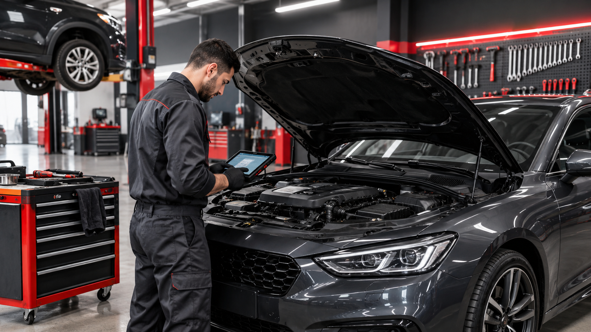

EN IMAGESL'univers du garage
L'univers du garage
en quelques détails.
Visuels d'illustration en attendant les photographies réelles de l'atelier et de ses interventions.

Diagnostic automobileAtelier automobile
Contrôle moteur
Remplacer ces visuels par des photos originales du garage avant publication. Le même visuel est provisoirement réutilisé, faute de photographies réelles fournies.